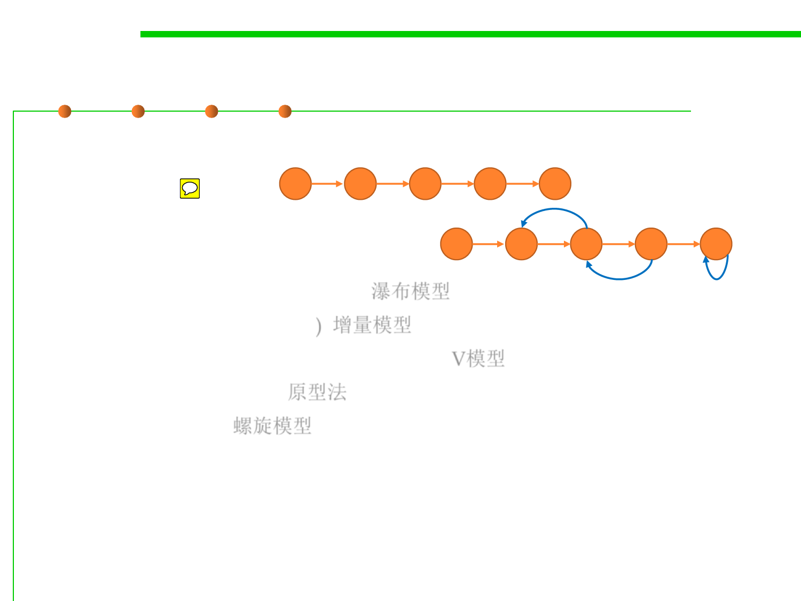
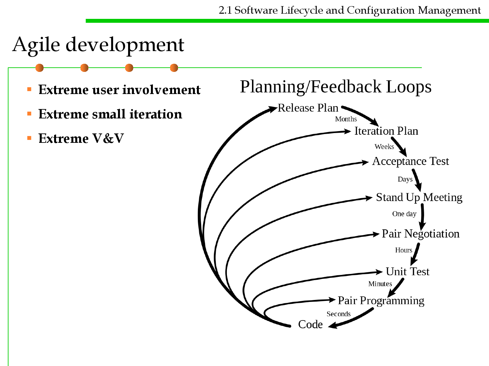
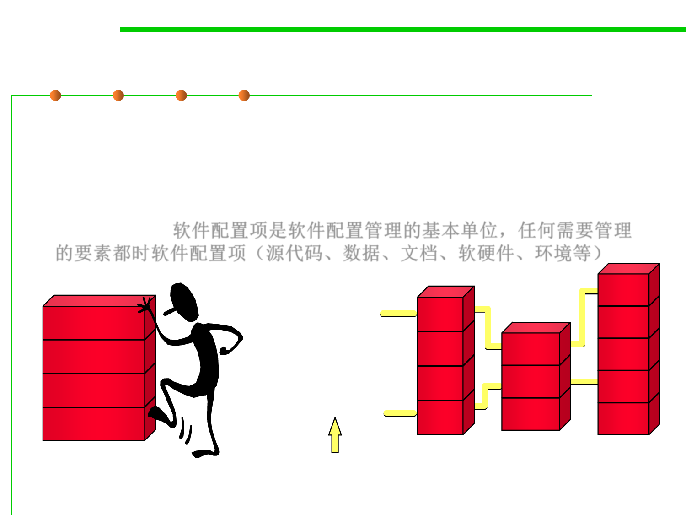
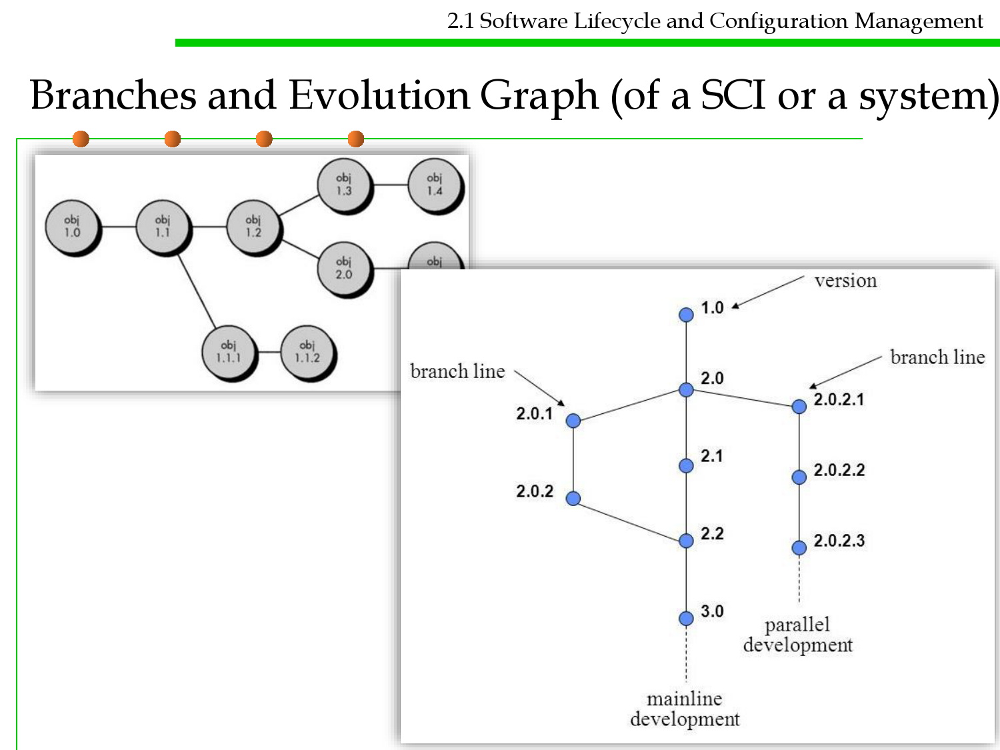
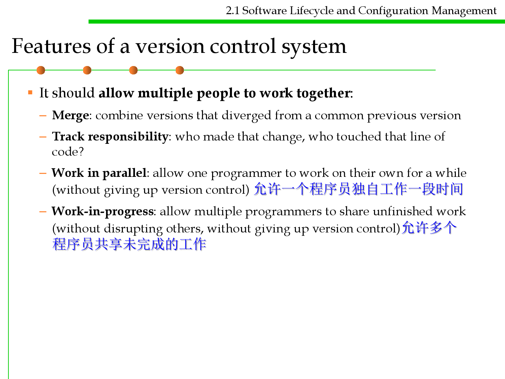
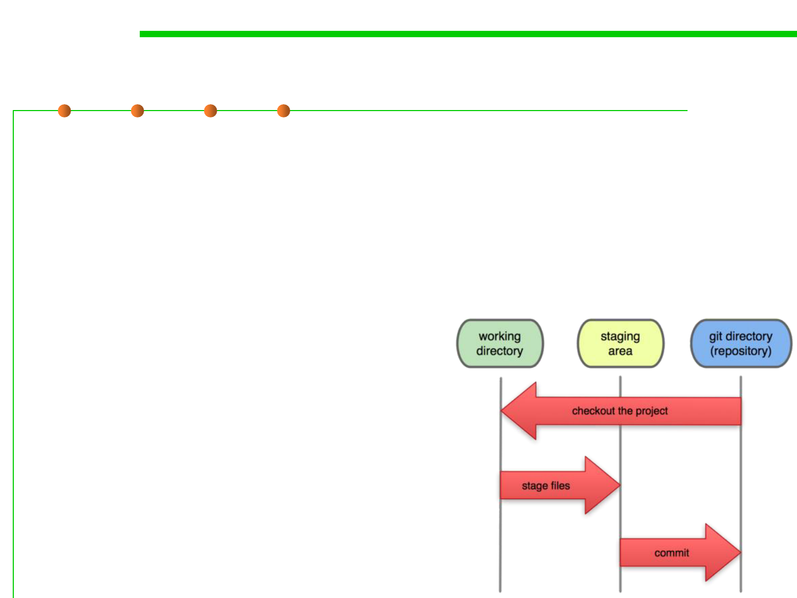

微信公众号[深容Pubmed文献检索] 1. 此处右键：选菜单【翻成中文（简体）】 2. 翻译后，此处右键：选菜单【打印...】成PDF格式
建议屏幕分辨率：1920X1080；如果屏幕太小，可以按Ctrl + 或 Ctrl -缩放网页。

Software Construction
Chapter 2: Process and Tools of Software
Construction
2.1 Software Lifecycle and
Configuration Management
Xu Hanchuan
xhc@hit.edu.cn
March 3, 2019

Outline
2.1 Software Lifecycle and Configuration Management
▪ Software Development Lifecycle (SDLC)
▪ Traditional software process models (waterfall, incremental, V-
model, prototyping, spiral)
▪ Agile development and eXtreme Programming (XP)
▪ Collaborative software development
▪ Software Configuration Management (SCM)
▪ Git as a SCM tool
▪ Summary
2.1 Software Lifecycle and Configuration Management
Objectives of this lecture
▪ To know the general process of software development
▪ To understand the philosophy of traditional software process
models including linear and iterative models (waterfall,
incremental, prototyping, spiral, and V-model)
▪ To know and make practice of Agile development
▪ To understand Software Configuration Management (SCM)
▪ To learn how to use Git for daily SCM tasks (basic commands for
personal dev., advanced commands for collaborative dev.)

Software Construction
1 Software Development Lifecycle
(SDLC)

2.1 Software Lifecycle and Configuration Management
Constituents of a software system
Business Objectives
Program
Data
Documents
Users
Software
Technological
Environment
Hardware
Social Environment
2.1 Software Lifecycle and Configuration Management
Lifecycle of a software
▪ Software Development Life Cycle (SDLC): From Zero to One

2.1 Software Lifecycle and Configuration Management
Lifecycle of a software
▪ Multiple versions in the life of a software: From 1 to n
Initial
Version
Updated
Version 1
Updated
Version 2
…
Discarded
Version
2.1 Software Lifecycle and Configuration Management
Example 1: Microsoft Windows (1985-2016)
2.1 Software Lifecycle and Configuration Management
“Is Software Alive?”
▪ Sure! Any software has its own life.
– “Age” of a software: how long has it been produced and used?
– “Vitality(活力)” of a software: at a particular time, to what degree is it
welcome by the market and users?
▪ Expectation:
Long-lasting and full of vitality at any time
▪ However,
– Failed software development (from zero never to 1)
– Full of faults/errors during execution
– Software aging / decay (less validity)
– The DEATH of a software

2.1 Software Lifecycle and Configuration Management
Life patterns of software
Vitality
0
Time

2.1 Software Lifecycle and Configuration Management
Software Development Lifecycle (SDLC)
▪ This is to be studied in the course “Software Processes and Tools”
(Software Engineering track of the 3rd year)
1 Introduction
3 Project Mgmt.
2 Software
process model
5 Req. Eng.
6 Analysis and
design
7 Testing and
quality
8 Maintenance
4 UML
9 SCM

Software Construction
2 Traditional Software Process
Models

2.1 Software Lifecycle and Configuration Management
Traditional software process models
▪ Two basic types:
– Linear
– Iterative
▪ Existing models:
– Waterfall (Linear, non-iterative) 瀑布模型
– Incremental (non-iterative) 增量模型
– V-Model (for verification and validation) V模型
– Prototyping (iterative) 原型法
– Spiral (iterative) 螺旋模型
▪ Key quality considerations:
– User involvement (adapt to changes)
– Development efficiency, project management complexity
– Quality of software
2.1 Software Lifecycle and Configuration Management
Waterfall (sequential, non-iterative) 瀑布模型
▪ Progress is seen as flowing steadily downwards (like a waterfall)
through the phases of conception, initiation, analysis, design,
construction, testing, implementation and maintenance.
▪ Easy to use, but after-the-fact changes are prohibitively costly. 利
于使用，应对变化代价高
▪ Defined by Winston W. Royce in 1970.

2.1 Software Lifecycle and Configuration Management
Incremental (non-iterative) 增量模型
▪ The product is designed, implemented and tested incrementally (a
little more is added each time) until the product is finished. 将整个产
品分成不同的增量，逐一完成。
▪ It applies the waterfall model incrementally. 以增量的方式实施瀑布模型
– System is broken down into many mini development projects.
– Partial systems are built to produce the final system.
– First tackled highest priority requirements. 通常首先实现优先级最高的需求
– The requirement of a portion is frozen once the incremented portion is
developed. 一旦开始开发某增量，则该增量的对应需求被冻结
2.1 Software Lifecycle and Configuration Management
Incremental (non-iterative)
2.1 Software Lifecycle and Configuration Management
V-Model (for verification and validation)
▪ V-model represents a development process that may be considered
an extension of the waterfall model. 瀑布模型的扩展，强化测试
– Instead of moving down in a linear way, the process steps are bent
upwards after the coding phase, to form the typical V shape.
– Demonstrates the relationships between each phase of the development
life cycle and its associated phase of testing.
– The horizontal and
vertical axes represents
time or project
completeness
(left-to-right) and
level of abstraction
(coarsest-grain abstraction
uppermost), respectively.

2.1 Software Lifecycle and Configuration Management
Prototyping (iterative) 原型法
▪ Software prototyping is the activity of creating prototypes of
software applications, i.e., incomplete versions of the software
program being developed. 实现系统的原型
– A prototype typically simulates a few aspects of, and may be completely
different from, the final product. 原型模拟最终产品的几个方面，甚至
完全不同
▪ Process:
– Identify basic requirements: determine basic requirements including the
input and output information desired. Details can typically be ignored.
– Develop initial prototype: The initial prototype is developed that includes
only user interfaces.
– Review: The customers, including end-users, examine the prototype and
provide feedback on additions or changes.
– Revise and enhance the prototype: Using the feedback both the
specifications and the prototype can be improved. If changes are
introduced then a repeat of steps #3 and #4 may be needed.
2.1 Software Lifecycle and Configuration Management
Prototyping (iterative)
▪ Benefits:
– The software designer and implementer
can get valuable feedback from the users
early in the project. 在项目早期可以获得
用户的反馈
– The client can compare if the software
made matches the software specification,
according to which the software
program is built. 用户判断软件是否符合
规格说明
– It also allows the software engineer some
insight into the accuracy of initial project
estimates and whether the deadlines and
milestones proposed can be successfully
met. 对软件进行估算。

2.1 Software Lifecycle and Configuration Management
Spiral (iterative) 螺旋模型
▪ The spiral model is a risk-driven process model generator for
software projects. 一种风险驱动的过程模型
– Based on the unique risk patterns of a given project, the spiral model
guides a team to adopt elements of one or more process models, such as
incremental, waterfall, or evolutionary prototyping.
▪ Firstly described by Barry Boehm in 1986.

Spiral (iterative)
2.1 Software Lifecycle and Configuration Management
Software Construction
3 Agile development
Agile development
2.1 Software Lifecycle and Configuration Management
▪ It advocates adaptive planning, evolutionary development, early
delivery, and continuous improvement, and it encourages rapid
and flexible response to change. Agile Manifesto was firstly coined
in 2001 by 17 famous “programmers”. 提倡适应性规划、演化开发、
尽早交付和持续改进，并鼓励对变化作出快速和灵活的响应。
– Individuals and Interactions over processes and tools (“人”以及“人与
人的互动” 胜于 “过程”和”工具” )
• Self-organization and motivation are important, as are interactions like co-
location and pair programming.
– Working Software over comprehensive documentation (可运行的软件 胜
于 面面俱到的文档)
• Working software is more useful and welcome than just presenting documents to
clients in meetings.
Agile development
2.1 Software Lifecycle and Configuration Management
▪ It advocates adaptive planning, evolutionary development, early
delivery, and continuous improvement, and it encourages rapid
and flexible response to change. Agile Manifesto was firstly coined
in 2001 by 17 famous “programmers”.
– Customer Collaboration over contract negotiation(客户合作 胜于 合同谈判
)
• Requirements cannot be fully collected at the beginning of the software
development cycle, therefore continuous customer or stakeholder involvement is
very important.
– Responding to Change over following a plan(响应变化 胜于 遵循计划)
• Agile methods are focused on quick responses to change and continuous
development.

2.1 Software Lifecycle and Configuration Management
Agile development: rapid delivery

Agile development
2.1 Software Lifecycle and Configuration Management
▪ Extreme user involvement
▪ Extreme small iteration
▪ Extreme V&V
Waterfall vs. Agile
2.1 Software Lifecycle and Configuration Management

2.1 Software Lifecycle and Configuration Management
Agile development method：eXtreme Programming (XP)
Incremental user stories
user st ories
values
accept ance t est crit eria
it erat ion plan
simple design
CRC cards
Prototyping 原型
spike solut ions
prot ot ypes
Refactoring
Test-Driven Dev.
(TDD)测试驱动的开发
Continuous delivery
持续发布
Iteration refact oring
pair
programming
Pair programming
Release
sof t ware increment
project velocit y comput ed
unit t est
cont inuous int egrat ion
结对编程
accept ance t est ing
Build automation 自动构建
Continuous integration 持续集成
Pair Programming
2.1 Software Lifecycle and Configuration Management
2.1 Software Lifecycle and Configuration Management
Task board and progress monitoring
2.1 Software Lifecycle and Configuration Management
Agile development method：Scrum

Software Construction
4 Collaborative software
development

Open Source
2.1 Software Lifecycle and Configuration Management
Richard Matthew Stallman
(1953-)
Known for Free software
movement, GNU, Emacs, GCC,
GPL, FSF
2.1 Software Lifecycle and Configuration Management
Open Source Development Model
Mode details
2.1 Software Lifecycle and Configuration Management


Software Construction
5 Software Configuration
Management (SCM)
and Version Control System (VCS)
2.1 Software Lifecycle and Configuration Management
Software Configuration Mgmt. (SCM)
▪ SCM is the task of tracking and controlling changes in the software.
SCM的任务是追踪与控制软件中的变化
▪ SCM practices include revision control and the establishment of
baselines. SCM实际任务是版本控制和建立基线

2.1 Software Lifecycle and Configuration Management
Life Cycle of a Configuration Item (CI)
▪ Any constituents of a software (source code, data, documents,
hardware, various environments) may be updated along with the
time in the life cycle of the software.
▪ Software Configuration Item (SCI): the fundamental structural
unit of SCM. 软件配置项是软件配置管理的基本单位，任何需要管理
的要素都时软件配置项（源代码、数据、文档、软硬件、环境等）
1.3
Final
Version
1.3
1.4
1.3
1.2
1.2
1.2
1.2
1.1
Beta 1
1.1
1.1
1.1
1.0
1.0
1.0
1.0
Version
Labels
File 1
File 2 File 3
2.1 Software Lifecycle and Configuration Management
Configuration Items (SCI) and Baselines
▪ A baseline is an agreed description of the attributes of a product,
at a point in time, which serves as a basis for defining change. 基线
是在某时间点上，通过评审和认可后的版本，作为后续变化的基点。
2.1 Software Lifecycle and Configuration Management
CMDB and Check-in/Check-out for Auditing
CMDB (Configuration Management Database)
配置管理数据库
2.1 Software Lifecycle and Configuration Management
CMDB and Check-in/Check-out for Auditing
Check-in 检入 Check-out 检出
Versioning
2.1 Software Lifecycle and Configuration Management
▪ Software versioning is the process of assigning either
unique version names or unique version numbers to unique
states of computer software. 给软件的某个状态唯一的标识
– Within a given version number category (major, minor), these
numbers are generally assigned in increasing order and correspond
to new developments in the software.
– At a fine-grained level, revision control is often used for keeping
track of incrementally different versions of electronic information,
whether or not this information is computer software.
2.1 Software Lifecycle and Configuration Management
Version control systems you’ve already used
2.1 Software Lifecycle and Configuration Management
Why version control is required – for individuals
▪ Reverting to a past version
▪ Comparing two different versions
▪ Pushing full version history to another location
▪ Pulling history back from that
location
▪ Merging versions that are
offshoots of the same earlier version
2.1 Software Lifecycle and Configuration Management
Why version control is required – for teamwork
▪ Communications and share/merge works among multiple developers
▪ Logging individualized works of different developers for auditing
记录不同开发人员的工作，以便于审计

2.1 Software Lifecycle and Configuration Management
Branches and Evolution Graph (of a SCI or a system)

Branches
2.1 Software Lifecycle and Configuration Management
▪ It sometimes makes sense for a subset of the developers to go off and
work on a branch, a parallel code universe for, say, experimenting with
a new feature. 在分支上进行并行开发，如测试新功能
▪ The other developers don’t want to pull in the new feature until it is
done, even if several coordinated versions are created in the meantime.
其他人员不想在新功能完成之前涉及新功能
▪ Even a single developer can find it useful to create a branch, for the
same reasons that Alice was originally using the cloud server despite
working alone. 分支对单个开发人员也很有用
▪ In general, it will be useful to have many shared places for exchanging
project state. There may be multiple branch locations at once, each
shared by several programmers. With the right set-up, any
programmer can pull from or push to any location, creating serious
flexibility in cooperation patterns. 通过正确的设置，任何程序员都可以
从任何位置拉出或推送到任何位置，从而在合作模式中创造出极大的灵
活性。
2.1 Software Lifecycle and Configuration Management
Version Control System (VCS)
▪ Local VCS
▪ Centralized VCS
▪ Distributed VCS
2.1 Software Lifecycle and Configuration Management
Version Control System (VCS)
▪ Local VCS
▪ Centralized VCS(e.g., CVS,SVN)
▪ Distributed VCS
2.1 Software Lifecycle and Configuration Management
Version Control System (VCS)
▪ Local VCS
▪ Centralized VCS
▪ Distributed VCS(e.g., Git)

2.1 Software Lifecycle and Configuration Management
Version control terminology
▪ Repository: a local or remote store of the versions in our project
▪ Working copy: a local, editable copy of our project that we can work
on
▪ File: a single file in our project
▪ Version or revision: a record of the contents of our project at a point
in time
▪ Change or diff: the difference between two versions
▪ Head: the current version

2.1 Software Lifecycle and Configuration Management
Features of a version control system
▪ Reliable: keep versions around for as long as we need them; allow
backups
▪ Multiple files: track versions of a project, not single files
▪ Meaningful versions: what were the changes, why were they made?
▪ Revert: restore old versions, in whole or in part
▪ Compare versions
▪ Review history: for the whole project or individual files
▪ Not just for code: prose, images, …

2.1 Software Lifecycle and Configuration Management
Features of a version control system
▪ It should allow multiple people to work together:
– Merge: combine versions that diverged from a common previous version
– Track responsibility: who made that change, who touched that line of
code?
– Work in parallel: allow one programmer to work on their own for a while
(without giving up version control) 允许一个程序员独自工作一段时间
– Work-in-progress: allow multiple programmers to share unfinished work
(without disrupting others, without giving up version control)允许多个
程序员共享未完成的工作

Software Construction
6 Git as an example of SCM tool
What is Git?
2.1 Software Lifecycle and Configuration Management
▪ Initial release: 2005
▪ Initial Author: Linus Torvalds
▪ For development of the Linux kernel.
Linus Torvalds (1969-)
2.1 Software Lifecycle and Configuration Management
Managing changes in software evolution process
 
Git repository
2.1 Software Lifecycle and Configuration Management
▪ A Git repository has three parts:
– .git directory (a repository storing all version control data)
– Working directory (local file system)
– Staging area (in memory)
▪ Each file belongs to one of the following three states:
– Modified (the file in working directory
is different from the one in git repository,
but is not in staging area)
– Staged (the file is modified and has been
added into the staging area)
– Committed (the file keeps same in working
directory and git directory)

Object graph in Git
2.1 Software Lifecycle and Configuration Management
▪ All of the operations we do with Git — clone, add, commit, push,
log, merge, … — are operations on a graph data structure that
stores all of the versions of files in the project, and all the log
entries describing those changes. Git的所有操作都是在一个图数据
库上进行
▪ The Git object graph is stored in the .git directory of the repository.
▪ Copying a git project from another machine/server means copying
the whole object graph.从另一台机器/服务器复制git项目意味着复制
整个对象图。
– git clone
2.1 Software Lifecycle and Configuration Management
What an Object Graph looks like?
▪ Object graph, being the history of a Git project,
is a directed acyclic graph (DAG).

2.1 Software Lifecycle and Configuration Management
Commits: nodes in Object Graph
▪ Each commit is a snapshot of our entire project, which Git represents
with a tree node. For a project of any reasonable size, most of the
files won’t change in any given revision. Storing redundant copies of
the files would be wasteful, so Git doesn’t do that. 不重复保存各版本
中没有发生变化的文件
▪ Instead, the Git object graph stores each version of an individual
file once, and allows multiple commits to share that one copy. 每个文
件的每个版本只保存一次，多个提交可共享副本
▪ Each commit also has log data — who, when, short log message, etc.
2.1 Software Lifecycle and Configuration Management
Managing changes in Git
▪ Traditional VCS:
▪ In Git:
2.1 Software Lifecycle and Configuration Management
Commits: nodes in Object Graph
2.1 Software Lifecycle and Configuration Management
Add to the object graph with git commit

2.1 Software Lifecycle and Configuration Management
Send & receive object graphs with git push & git
pull
2.1 Software Lifecycle and Configuration Management
Git supports Branch and Merge
▪ A branch is the duplication of an object under revision
control so that modifications can happen in parallel along
both branches.分支是在版本控制下对对象的复制，以便修
改可以沿两个分支平行进行。
▪ Merging two branches together.
2.1 Software Lifecycle and Configuration Management
Branching
2.1 Software Lifecycle and Configuration Management
Creating and merging branches in Git
git checkout –b iss53
git commit
git checkout master
git checkout –b hotfix
git commit
git checkout master
git merge hotfix

2.1 Software Lifecycle and Configuration Management
Creating and merging branches in Git
git branch –d hotfix
git checkout iss53
git commit
git checkout master
git merge iss53
2.1 Software Lifecycle and Configuration Management
Git supports collaboration
▪ Local repository and Remote Repository
2.1 Software Lifecycle and Configuration Management
Git supports collaboration
2.1 Software Lifecycle and Configuration Management
Git supports collaboration

2.1 Software Lifecycle and Configuration Management
Git supports collaboration

GitHub
2.1 Software Lifecycle and Configuration Management
▪ GitHub: a web-based Git server and Internet hosting service.
– It offers all of the distributed version control and SCM functionality of Git
as well as adding its own features.
– It provides access control and several collaboration features such as bug
tracking, feature requests, task management, and wikis for every project.
– Private and free repositories (for open-source projects)
▪ In 2016, it has more than 14 million users above 35 million
repositories.
▪ In 2018, it was bought by Microsoft with $7.5 billion.
2.1 Software Lifecycle and Configuration Management
GitHub working process
▪ Basic process: commit, branch and merge
▪ Collaboration process: fork and pull request
– Fork 将他人的代码复制到自己的仓库中
– Pull request 修改他人代码后，向其他人发送pull 请求，已决定是否接受
2.1 Software Lifecycle and Configuration Management
GitHub working process
2.1 Software Lifecycle and Configuration Management
Issue Tracking and Pull Request

Software Construction
6 Summary

Summary
2.1 Software Lifecycle and Configuration Management
▪ General Software Development Lifecycle (SDLC)
▪ Traditional software process models
– Waterfall, incremental, prototype, iterative
▪ Agile development
▪ Collaborative software development
▪ Software Configuration Management (SCM)
▪ Git as a SCM tool


Software Construction
The end
March 3, 2019